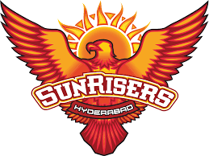

Cricket is a bat-and-ball game played between two teams of eleven players on a field at the centre of which is a
20-metre (22-yard) pitch with a wicket at each end, each comprising two bails balanced on three stumps. The batting
side scores runs by striking the ball bowled at the wicket with the bat, while the bowling and fielding side tries
to prevent this and dismiss each batter (so they are "out"). Means of dismissal include being bowled, when the ball
hits the stumps and dislodges the bails, and by the fielding side catching the ball after it is hit by the bat, but
before it hits the ground. When ten batters have been dismissed, the innings ends and the teams swap roles. The game
is adjudicated by two umpires, aided by a third umpire and match referee in international matches. They communicate
with two off-field scorers who record the match's statistical information.
There are quite a few formats ranging from Twenty20, played over a few hours with each team batting for a single
innings of 20 overs, to Test matches, played over five days with unlimited overs and the teams each batting for two
innings of unlimited length. Traditionally cricketers play in all-white kit, but in limited overs cricket they wear
club or team colours. In addition to the basic kit, some players wear protective gear to prevent injury caused by
the ball, which is a hard, solid spheroid made of compressed leather with a slightly raised sewn seam enclosing a
cork core layered with tightly wound string.
Historically, cricket's origins are uncertain and the earliest definite reference is in south-east England in the
middle of the 16th century. It spread globally with the expansion of the British Empire, leading to the first
international matches in the second half of the 19th century. The game's governing body is the International Cricket
Council (ICC), which has over 100 members, twelve of which are full members who play Test matches. The game's rules
are held in a code called the Laws of Cricket which is owned and maintained by Marylebone Cricket Club (MCC) in
London. The sport is followed primarily in the Indian subcontinent, Australasia, the United Kingdom, southern Africa
and the West Indies, its globalisation occurring during the expansion of the British Empire and remaining popular
into the 21st century.[1] Women's cricket, which is organised and played separately, has also achieved international
standard. The most successful side playing international cricket is Australia, which has won seven One Day
International trophies, including five World Cups, more than any other country and has been the top-rated Test side
more than any other country.
ORIGIN
Although the main object of the game has always been to score the most runs, the early form of cricket differed from
the modern game in certain key technical aspects. The ball was bowled underarm by the bowler and along the ground
towards a batsman armed with a bat that, in shape, resembled a hockey stick; the batsman defended a low, two-stump
wicket; and runs were called notches because the scorers recorded them by notching tally sticks.[13][14][15]
In 1611, the year Cotgrave's dictionary was published, ecclesiastical court records at Sidlesham in Sussex state
that two parishioners, Bartholomew Wyatt and Richard Latter, failed to attend church on Easter Sunday because they
were playing cricket. They were fined 12d each and ordered to do penance.[16] This is the earliest mention of adult
participation in cricket and it was around the same time that the earliest known organised inter-parish or village
match was played – at Chevening, Kent.[5][17] In 1624, a player called Jasper Vinall died after he was accidentally
struck on the head during a match between two parish teams in Sussex.[18]
Cricket remained a low-key local pursuit for much of the 17th century.[9] It is known, through numerous references
found in the records of ecclesiastical court cases, to have been proscribed at times by the Puritans before and
during the Commonwealth.[19][20] The problem was nearly always the issue of Sunday play as the Puritans considered
cricket to be "profane" if played on the Sabbath, especially if large crowds or gambling were involved.[21][22]
According to the social historian Derek Birley, there was a "great upsurge of sport after the Restoration" in 1660.
Gambling on sport became a problem significant enough for Parliament to pass the 1664 Gambling Act, limiting stakes
to £100 which was, in any case, a colossal sum exceeding the annual income of 99% of the population. Along with
prizefighting, horse racing and blood sports, cricket was perceived to be a gambling sport. Rich patrons made
matches for high stakes, forming teams in which they engaged the first professional players. By the end of the
century, cricket had developed into a major sport that was spreading throughout England and was already being taken
abroad by English mariners and colonisers – the earliest reference to cricket overseas is dated A 1697 newspaper
report survives of "a great cricket match" played in Sussex "for fifty guineas apiece" – this is the earliest known
contest that is generally considered a First Class match.
RULES
1. Two teams, 22 players: Purdue University explains that a cricket match is little more than two teams facing off
against each other. Each team has 11 players on the field. One of a team's 11 players is the team captain. This
player is primarily responsible for ensuring that a team has no more than 11 players on the field at any given
time.
2. Umpires' rulings are final: Lord's notes that the umpire is the final authority in play decisions. Players who
fail to follow directions or who balk at an umpire's decision will be turned over to the team captain for dismissal
or other discipline measures.
3. Six balls equal one over: The bowler bowls the cricket ball to the striker. If the latter hits it and misses, the
ball is considered completed. After the bowler delivers six balls, he has completed an "over." Another team member
now takes a turn to bowl the next over.
4. Game duration is negotiated: Teams may agree to play two innings and limit the number of hours they will be on
the field. In the alternative, the teams may opt to only play one innings but do so by agreeing on the number of
overs ahead of time.
5. Professional-level cricket matches are limited duration games: Even so, these games -- usually referred to as
test matches -- last six hours per day and continue for five days. Since test matches must use natural light only,
playtime is set between 11 a.m. and 6 p.m.
6. Batsmen do not have to run: American audiences are familiar with baseball players tossing aside their bats and
running from base to base. In cricket, the batsmen carry their bats with them as they run and use them to touch the
ground marking their progress. It is noteworthy that they do not have to run.
7. Boundary fence hit equals four runs: Cricket recognizes that a batsman's ability to hit the fence with a bowled
ball should equal four runs. If the ball goes beyond the boundary fence, the batsman scores six runs.
8. Overthrows allow for additional runs: Should fielders neglect to throw the ball back, the batsmen will continue
taking runs. If the ball rolls to the boundary of the field, the runs already completed are added to the automatic
four-run score a boundary hit earns.
9. Time wasting is penalized: It is well known that cricket games can go on for days. In order to curtail time
wasting, a new batsman is out of the game if it takes him longer than two minutes to take the field after a wicket
fall.
10. Field placement is optional: The team captain may choose to place team members in a number of field positions.
Each captain uses this strategy to the advantage of the team and to throw off the strategy of the opposing team.
Content by Sylvia Cochran.
PLAYING AREA
Cricket is a bat-and-ball game played on a cricket field (see image, right) between two teams of eleven players
each.[58] The field is usually circular or oval in shape and the edge of the playing area is marked by a boundary,
which may be a fence, part of the stands, a rope, a painted line or a combination of these; the boundary must if
possible be marked along its entire length.[59]
In the approximate centre of the field is a rectangular pitch (see image, below) on which a wooden target called a
wicket is sited at each end; the wickets are placed 22 yards (20 m) apart.[60] The pitch is a flat surface 3 metres
(9.8 ft) wide, with very short grass that tends to be worn away as the game progresses (cricket can also be played
on artificial surfaces, notably matting). Each wicket is made of three wooden stumps topped by two bails.[61]
BAT AND BALL
The essence of the sport is that a bowler delivers (i.e., bowls) the ball from his or her end of the pitch towards
the batsman who, armed with a bat, is "on strike" at the other end (see next sub-section: Basic gameplay).
The bat is made of wood, usually salix alba (white willow), and has the shape of a blade topped by a cylindrical
handle. The blade must not be more than four and one quarter inches (108 mm) wide and the total length of the bat
not more than 38 inches (965 mm). There is no standard for the weight, which is usually between 2 lb 7 oz and 3 lb
(1.1 and 1.4 kg).[71][72]
The ball is a hard leather-seamed spheroid, with a circumference of 22.9 centimetres (9.0 in). The ball has a
"seam": six rows of stitches attaching the leather shell of the ball to the string and cork interior. The seam on a
new ball is prominent and helps the bowler propel it in a less predictable manner. During matches, the quality of
the ball deteriorates to a point where it is no longer usable; during the course of this deterioration, its
behaviour in flight will change and can influence the outcome of the match. Players will, therefore, attempt to
modify the ball's behaviour by modifying its physical properties. Polishing the ball and wetting it with sweat or
saliva is legal, even when the polishing is deliberately done on one side only to increase the ball's swing through
the air, but the acts of rubbing other substances into the ball, scratching the surface or picking at the seam are
illegal ball tampering.
WOMEN'S CRICKET
Women's cricket was first recorded in Surrey in 1745.[112] International development began at the start of the 20th
century and the first Test Match was played between Australia and England in December 1934.[113] The following year,
New Zealand women joined them, and in 2007 Netherlands women became the tenth women's Test nation when they made
their debut against South Africa women. In 1958, the International Women's Cricket Council was founded (it merged
with the ICC in 2005).[113] In 1973, the first Cricket World Cup of any kind took place when a Women's World Cup was
held in England.[113] In 2005, the International Women's Cricket Council was merged with the International Cricket
Council (ICC) to form one unified body to help manage and develop cricket. The ICC Women's Rankings were launched on
1 October 2015 covering all three formats of women's cricket. In October 2018 following the ICC's decision to award
T20 International status to all members, the Women's rankings were split into separate ODI (for Full Members) and
T20
GOVERNENCE
The International Cricket Council (ICC), which has its headquarters in Dubai, is the global governing body of
cricket. It was founded as the Imperial Cricket Conference in 1909 by representatives from England, Australia and
South Africa, renamed the International Cricket Conference in 1965 and took up its current name in 1989.[113] The
ICC in 2017 has 105 member nations, twelve of which hold full membership and can play Test cricket.[115] The ICC is
responsible for the organisation and governance of cricket's major international tournaments, notably the men's and
women's versions of the Cricket World Cup. It also appoints the umpires and referees that officiate at all
sanctioned Test matches, Limited Overs Internationals and Twenty20 Internationals.
Each member nation has a national cricket board which regulates cricket matches played in its country, selects the
national squad, and organises home and away tours for the national team.[116] In the West Indies, which for cricket
purposes is a federation of nations, these matters are addressed by Cricket West Indie.
The table below lists the ICC full members and their national cricket board
Nation Governing body Member since[119]
1.Afghanistan Afghanistan Cricket Board 22 June 2017
2.Australia Cricket Australia 15 July 1909
3.Bangladesh Bangladesh Cricket Board 26 June 2000
4.England England and Wales Cricket Board 15 July 1909
5.India Board of Control for Cricket in India 31 May 1926
6.Ireland Cricket Ireland 22 June 2017
7.New Zealand New Zealand Cricket 31 May 1926
8.Pakistan Pakistan Cricket Board 28 July 1953
9.South Africa Cricket South Africa 15 July 1909
10.Sri Lanka Sri Lanka Cricket 21 July 1981
11.West Indies Cricket West Indies 31 May 1926
12.Zimbabwe Zimbabwe Cricket 6 July 1992
TYPES OF MATCHES
Cricket is a multi-faceted sport with multiple formats that can effectively be divided into first-class cricket,
limited overs cricket and, historically, single wicket cricket. The highest standard is Test cricket (always written
with a capital "T") which is in effect the international version of first-class cricket and is restricted to teams
representing the twelve countries that are full members of the ICC (see above). Although the term "Test match" was
not coined until much later, Test cricket is deemed to have begun with two matches between Australia and England in
the 1876–77 Australian season; since 1882, most Test series between England and Australia have been played for a
trophy known as The Ashes. The term "first-class", in general usage, is applied to top-level domestic cricket. Test
matches are played over five days and first-class over three to four days; in all of these matches, the teams are
allotted two innings each and the draw is a valid result.[120]
Limited overs cricket is always scheduled for completion in a single day, and the teams are allotted one innings
each. There are two types: List A which normally allows fifty overs per team; and Twenty20 in which the teams have
twenty overs each. Both of the limited overs forms are played internationally as Limited Overs Internationals (LOI)
and Twenty20 Internationals (T20I). List A was introduced in England in the 1963 season as a knockout cup contested
by the first-class county clubs. In 1969, a national league competition was established. The concept was gradually
introduced to the other leading cricket countries and the first limited overs international was played in 1971. In
1975, the first Cricket World Cup took place in England. Twenty20 is a new variant of limited overs itself with the
purpose being to complete the match within about three hours, usually in an evening session. The first Twenty20
World Championship was held in 2007. Limited overs matches cannot be drawn, although a tie is possible and an
unfinished match is a "no result".[121][122]
Single wicket was popular in the 18th and 19th centuries and its matches were generally considered top-class. In
this form, although each team may have from one to six players, there is only one batsman in at a time and he must
face every delivery bowled while his innings lasts. Single wicket has rarely been played since limited overs cricket
began. Matches tended to have two innings per team like a full first-class one and they could end in a draw.
THE STORY OF CRICKET IN INDIA
INDIA won its first world cup in 1983 world cup against WEST INDIES.
THE WORLD CUP SQUAD OF INDIA IN 1983.
1.Kapil Dev (c) 6 January 1959 Right hand Right arm fast-medium India Haryana
2.Mohinder Amarnath 24 September 1950 Right hand Right arm medium India Delhi
3.Kirti Azad 2 January 1959 Right-hand Right-arm off-spinner India Delhi
4.Roger Binny 19 July 1955 Right-hand Right-arm fast-medium India Karnataka
5.Sunil Gavaskar 10 July 1949 Right hand Right arm medium
6.Right arm offbreak India Bombay
7.Syed Kirmani (wk) 29 December 1949 Right-handed Wicket-keeper India Karnataka
8.Madan Lal 20 March 1951 Right-hand Right-arm medium India Delhi
9.Sandeep Patil 18 August 1956 Right-hand Right-arm medium India Bombay
10.Balwinder Sandhu 3 August 1956 Right-handed Right arm medium-fast India Bombay
11.Yashpal Sharma 11 August 1954 Right-handed Right-arm medium India Punjab
12.Ravi Shastri 27 May 1962 Right-hand Slow left-arm orthodox India Bombay
13.Krishnamachari Srikkanth 21 December 1959 Right hand Right-arm medium
14.Right-arm offbreak India Tamil Nadu
15.Sunil Valson 2 October 1958 Right-hand Left-arm medium India Delhi
16.Dilip Vengsarkar 6 April 1956 Right hand Right arm medium India Bombay
THE INDIAN TEAM WON IT'S SECOND WORLD CUP AFTER 28 YEARS IN THE CAPTAINCY OF YOUNG BLOOD MAHENDRA
SINGH DHONI
THE INDIAN SQUAD FOR THE 2011 WORLD CUP;
1.M.S.DHONI
2.SACHIN TENDULKAR
3.VIRENDER SEHWAG
4.GAUTAM GAMBHIR
5.SURESH RAINA
6.YUVRAJ SINGH
7.IRFAN PATHAN
8.YUSUF PATHAN
9.ASHISH NEHRA
10.MUNAF PATEL
11.HARBHAJAN SINGH
12.SREESANTH
12.VIRAT KOHLI
13.PIYUSH CHAWLA
14.ZAHEER KHAN
15.ASHWIN
THE MOST SUCCESFUL CAPTAIN IN THE HISTORY OF THE CRICKET
The Indian Premier League is a professional Twenty20 cricket league in India contested during March or April and
May of every year by eight teams representing eight different cities in India. The league was founded by the
Board of Control for Cricket in India in 2008.
Current champion: Mumbai Indians (4th title)
Founder: Lalit Modi
Founded: 2008, India
Number of teams: 8
THE EIGHT IPL TEAMS ARE :
1.CHENNAI SUPER KINGS
The Chennai Super Kings (CSK) are a franchise cricket team based in Chennai, Tamil Nadu, which plays in the Indian
Premier League (IPL). Founded in 2008, the team plays its home matches at the M. A. Chidambaram Stadium in Chennai.
The team served a two-year suspension from the IPL starting July 2015 for the alleged involvement of their owners in
the 2013 IPL betting case and won the title in its comeback season. The team is captained by Mahendra Singh Dhoni
and coached by Stephen Fleming.
2.MUMBAI INDIANS
The Mumbai Indians are a franchise cricket team based in the city of Mumbai, Maharashtra, that play in the Indian
Premier League. Founded in 2008, the team is owned by India's biggest conglomerate, Reliance Industries, through its
100% subsidiary IndiaWin Sports.
3.ROYAL CHALLENGERS BANGLORE
The Royal Challengers Bangalore are a franchise cricket team based in Bangalore, Karnataka, that plays in the Indian
Premier League. It was founded in 2008 by United Spirits and named after the company's liquor brand Royal Challenge.
4.DELHI CAPITALS
The Delhi Capitals are a franchise cricket team that represents the city of Delhi in the Indian Premier League.
Founded in 2008 as the Delhi Daredevils, the franchise is jointly owned by the GMR Group and the JSW Group. The
team's home ground is Arun Jaitley Stadium, located in New Delhi.
5.KOLKATA KNIGHT RIDERS
The Kolkata Knight Riders are a franchise cricket team representing the city of Kolkata in the Indian Premier
League. The franchise is owned by Bollywood actor Shah Rukh Khan, actress Juhi Chawla and her spouse Jay Mehta. The
home of the Knight Riders is the iconic Eden Gardens stadium.
6.SUNRISERS HYDERABAD
The Sunrisers Hyderabad are a franchise cricket team based in Hyderabad, Telangana, India, that plays in the Indian
Premier League. The franchise is owned by Kalanithi Maran of the Sun TV Network and was founded in 2012 after the
Hyderabad-based Deccan Chargers were terminated by the IPL.

7.RAJASTHAN ROYALS
The Rajasthan Royals are a franchise cricket team based in Jaipur, Rajasthan, that plays in the Indian Premier
League. Founded in 2008 as one of the initial eight IPL franchises, the team is based at the Sawai Mansingh Stadium
in Jaipur. The Rajasthan Royals are sometimes considered as the "moneyball" team of the IPL.
8.KINGS XI PUNJABS
The Kings XI Punjab are a franchise cricket team based in Mohali, Punjab, that plays in the Indian Premier League.
Established in 2008, the franchise is jointly owned by Mohit Burman, Ness Wadia, Preity Zinta and Karan Paul. The
team plays its home matches at the PCA Stadium, Mohali.
RANJHI TROPHY CRICKET
The Ranji Trophy is a domestic first-class cricket championship played in India between multiple teams representing
regional and state cricket associations. The competition currently consists of 38 teams, with all 28 states in India
and four of the eight union territories having at least one representation. The competition is named after the first
Indian cricketer who played international cricket, Ranjitsinhji, who was also known as 'Ranji'.
♠; Countries : India
♠Administrator: BCCI
♠Format: First-class cricket
♠First edition: 1934 86 years ago
♠Tournament format: Round-robin then knockout
♠Number of teams: 38
♠Current champion: Saurashtra (1st title)
♠Most successful Mumbai: (41 titles)
♠Qualification: Irani Cup
♠Most runs: Wasim Jaffer (12,038)
1996–2020
♠Most wickets: Rajinder Goel (640)
1958–1985
![cricket stadium]()

.jpg)